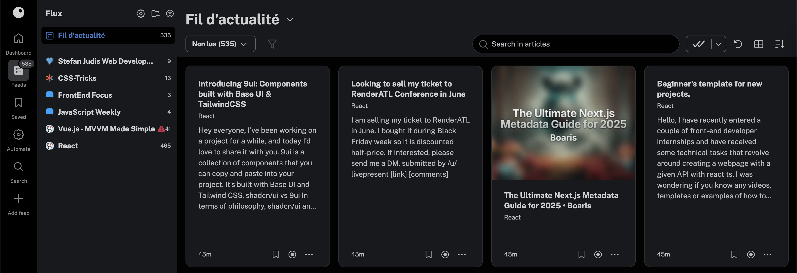

Bienvenue sur mon portfolio
Je suis Baptiste BEAUX, développeur web, étudiant en deuxième année de BTS SIO option SLAM au lycée Charles Péguy à Marseille.
Je suis Baptiste BEAUX, développeur web, étudiant en deuxième année de BTS SIO option SLAM au lycée Charles Péguy à Marseille.

Qu'est-ce qu'une veille ?
Une veille technologique est un processus de surveillance et d’analyse des avancées, innovations et tendances dans un domaine technologique donné.
----------------------------------------------------------------------------
Mon agrégateur de flux : Inoreader
----------------------------------------------------------------------------
Les 3 meilleurs frameworks JavaScript:
- React
- Vue.js
- Angular
React vs Vue.js ? Lequel utiliser ?
| React | Vue.js |
|---|---|
| - Apprendre le JSX | - Syntaxe Facile (HTML, CSS, JS) |
| - React Native | - Bibliothèques non-officielles |
| - Communauté plus grande | - Communauté plus petite |
| - Next.js | - Pas de gestion de back-end |
Feeds
| Compétences | Preuves |
|---|---|
| Gérer le patrimoine informatique | Compétence non validée ❌ |
| Répondre aux incidents et aux demandes d’assistance et d’évolution |
Réunions avec le maître de stage |
| Développer la présence en ligne de l’organisation | Programme d'affilliation |
| Travailler en mode projet | Asana / Supports papier |
| Mettre à disposition des utilisateurs sur un service informatique |
Déploiement sur OVH Cloud |
| Organiser son développement personnel | Développement de la veille technologique |